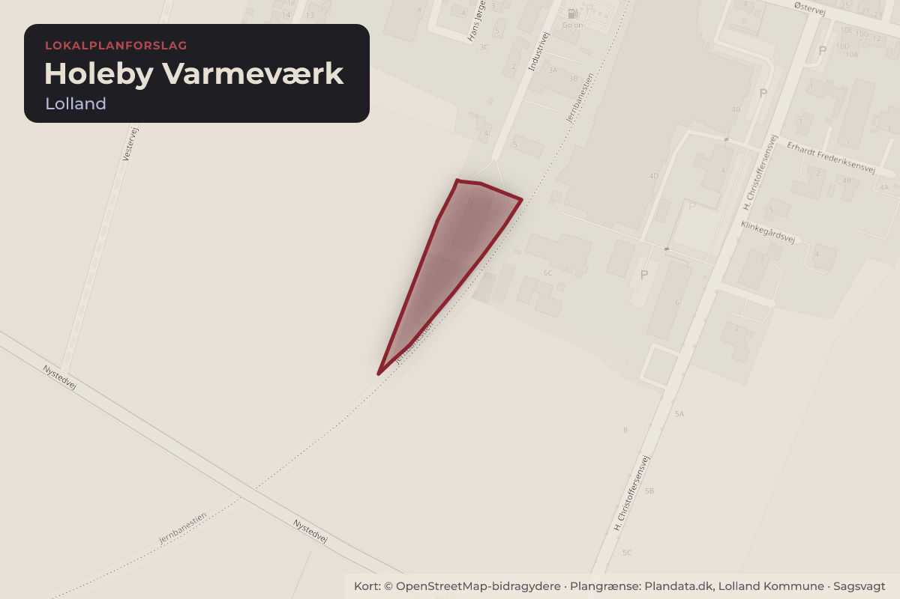
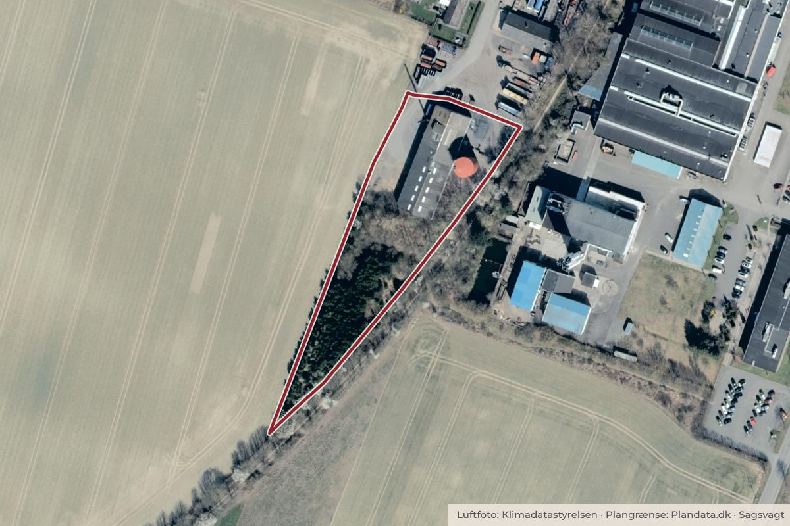

Besluttet 10. august, Klima-, Teknik- og Miljøudvalget, Lolland
Forslag og høring – Kommuneplantillæg og lokalplan for Holeby Varmeværk
Byggeri og lokalplanerErhverv og job

Kort: © OpenStreetMap-bidragydere. Plangrænse: Plandata.dk, Lolland Kommune.

Kort fortalt
- Hvem
- Klima-, Teknik- og Miljøudvalget, Lolland Kommune
- Hvornår
- Mandag 10. august 2026
- Status
- Besluttet. Pkt. 1 Godkendt Pkt. 2 Der ses ikke at være grundlag for afholdelse af informationsmøde Behandlingsplan Behandlingsplan By Indstilling om høring Øke Bskf Ktm Sa Sæ stk. 4 x Orientering Drøftelse By=Byrådet - Øke=Økonomi- og erhvervsudvalget - Bskf=Børne-, skole-, kultur- og Fritidsudvalget - Ktm=Klima-, teknik- og miljøudvalget - Sa=Social- og arbejdsmarkedsudvalget - Sæ=Sundheds- og ældreudvalget - § 17, stk. 4=Borgerinddragelsesudvalget.
Er noget forkert her? Skriv til os
Læs hele sagen Kommunens egen tekst
Sagsfremstilling
Lolland Kommune har modtaget en ansøgning fra Holeby Varmeværk, som ønsker at tilføje en
elkedel til deres varmeanlæg. Dette sker med henblik på at kunne afskaffe det eksisterende,
gamle oliefyr. Varmeværket kører generelt på afbrænding af halm, men har mulighed for at
supplere produktionen med et oliefyr eller gå over på oliefyret som primær produktion hvis det
skulle blive nødvendigt. Dette oliefyr ønskes udskiftet med elkedel.
Det bagvedliggende projekt er med til at ændre varmeværket til en mere bæredygtig
energiform i overensstemmelse med "Varmeplan 2025-2033", hvor "Lolland Kommune anser
fjernvarme som en af nøglerne til den grønne omstilling af varmesektoren, hvor smart
anvendelse af en lang række energikilder er med til at sikre og understøtte et fleksibelt
energisystem.", og hvilket ligeledes er i overensstemmelse med beskrivelserne af
fremtidsplanerne for Holeby Varmeværk. Varmeplanen er udarbejdet på baggrund af
kommuneplanen. Anlægget og ændringerne er derfor generelt i overensstemmelse med
kommuneplanen.
"Forslag til Kommuneplantillæg 2 Erhvervsområde i Holeby øst" (Bilag 1) og "Forslag til
Lokalplan 360-170 Holeby Varmeværk " (Bilag 2) giver mulighed for, at Holeby Varmeværk
kan etablere ny, større akkumulatortank og et kedelhus til en el-kedel, med henblik på en
grønnere varmeproduktion.
Lolland Kommune ønsker med lokalplanen at give mulighed for, at Holeby Varmeværk kan
foretage de ønskede udvidelser og ændringer. Da akkumulatortanken får en højde på 20
meter, forudsætter det, at der udarbejdes et tillæg til Kommuneplan 2021-2033, som ændrer
bygningshøjden fra 8,5 meter til 10 meter for bebyggelse, 20 meter for tilhørende tankanlæg og
lignende, samt 25 meter for skorstene. (Den eksisterende skorsten er ca. 25 meter høj)
Der er tale om et lille lokalplanområde på 0,75 ha, og omfatter udelukkende halmvarmeværkets
areal. Lokalplanområdet ligger på Industrivej i den østlige ende af Holeby og afgrænses imod
øst, vest og syd af det åbne land, mod øst dog også jernbanestien og delvist erhvervsområdet
Erhvervspark Lolland. Imod nord afgrænses området af erhvervsbebyggelsen på Industrivej;
Nordvest for planområdet ligger to boliger, indenfor erhvervsområdet.
Lokalplanområdet er opdelt i et grønt område, som er eksisterende ung skovbeplantning, og et
område med bebyggelse. For at muliggøre værkets ønske om udvidelse, inddrager lokalplanen
den nordligste del af skovbeplantningen til byggefelt for høje bygningsdele. Der er ikke
kendskab til beskyttede dyr eller planter på arealet, og heller ikke på de omkringliggende
arealer. Arealet her, udlægges til bygningsdele over 10 meter, for at sikre minimale
påvirkninger for boligerne umiddelbart nord for varmeværket.
Da lokalplanområdet ligger ud imod det åbne land på tre sider, og giver mulighed for et 20
meter høj tank, er der i planen sikret at der sker en tilpasning i forhold til det åbne land og
Holebys landskabelige profil i form af krav om skærmende randbeplantning, grå og grønlige
farver på bebyggelsen, samt sikring imod lys direkte ud i landskabet.
"Forslag til Lokalplan 360-170 – Holeby Varmeværk" kan ses i en digital udgave på
https://lolland.viewer.dkplan.niras.dk/DKplan/DKplan.aspx?LokalplanId=527
Planmæssige forhold/Lovgrundlag
Lovgrundlag:
Planloven og miljøvurderingsloven.
Kommende kommuneplan (2025-2037):
I "Kommuneplan 2025-2037" er ændringen af bygningshøjden fra 8,5 til 10 meter, samt
muligheden for 20 meter for bl.a. tankanlæg og 25 meter for skorstene, indarbejdet i
kommuneplanramme 360-E62 - Erhvervsområde i Holeby øst.
Lokalplan:
Der er ingen eksisterende lokalplan for området.
Miljøvurdering:
Ifølge miljøvurderingsloven skal der foretages en miljøvurdering af planer, hvis gennemførelse
kan få væsentlig indvirkning på miljøet.
På baggrund af en miljøscreening har Lolland Kommune efter lovens § 10 vurderet, at der ikke
skal gennemføres en miljøvurdering, da planerne ikke vurderes at danne grundlag for byggeri
og anlæg, der medfører en væsentlig indvirkning på miljøet, hverken indenfor eller udenfor
lokalplanområdet. Lolland Kommune har i vurderingen lagt vægt på, at planerne muliggør
udvidelse af det eksisterende varmeværk, med en el-kedel og en akkumulatortank som ikke
vurderes at påvirke området og at højderne der muliggøres i planerne, ikke væsentligt fraviger
området omkring, og at det ikke generelt påvirker byens fremtræden ud i det åbne land.
Det er samtidigt vurderet, at planerne ikke påvirker et internationalt naturbeskyttelsesområde.
Det nærmeste Natura 2000-område (N117 Maribosøerne) ligger ca. 4 km fra planområdet, og
anvendelsen indenfor planområdet ændrer sig ikke.
Høring/Udtalelse
Forslag til lokalplan skal ifølge planlovens regler sendes i min. 4 ugers offentlig høring.
Forslag til lokalplan skal ifølge planlovens regler sendes i min. 4 ugers offentlig høring.
Administrationen indstiller, at der tages stilling til om der skal afholdes informationsmøde i
høringsperioden, hvor der orienteres om varmeværkets planer. Værkets planer og projekt blev
præsenteret for varmekunderne på værkets seneste generalforsamling.
Administrationen anbefaler desuden, at den offentlige høring forlænges fra 4 til 8 uger, hvis der
skal afholdes et informationsmøde. En forlænget høringsperiode vil sikre tilstrækkelig tid til
planlægning og afholdelse af informationsmødet, samt give borgerne bedre tid til at indsende
eventuelle høringssvar.
Indstilling
Administrationen indstiller,
at "Forslag til Kommuneplantillæg 2 Erhvervsområde i Holeby øst" og "Forslag til
Lokalplan 360-170 Holeby Varmeværk" godkendes og sendes i 4 ugers offentlig
høring.
at der tages stilling til, om der skal afholdes informationsmøde i høringsperioden, og
i så fald udvides den offentlige høring fra 4 til 8 uger.
Beslutning
Pkt. 1 Godkendt
Pkt. 2 Der ses ikke at være grundlag for afholdelse af informationsmøde
Behandlingsplan
Behandlingsplan
By
Indstilling om høring
Øke
Bskf
Ktm
Sa
Sæ
stk. 4
x
Orientering
Drøftelse
By=Byrådet - Øke=Økonomi- og erhvervsudvalget - Bskf=Børne-, skole-, kultur- og
Fritidsudvalget - Ktm=Klima-, teknik- og miljøudvalget - Sa=Social- og arbejdsmarkedsudvalget
- Sæ=Sundheds- og ældreudvalget - § 17, stk. 4=Borgerinddragelsesudvalget
Kilde: Lolland Kommune, Klima-, Teknik- og Miljøudvalget, referat fra mødet mandag 10. august 2026, punkt 15. Læs den originale sag hos kommunen.